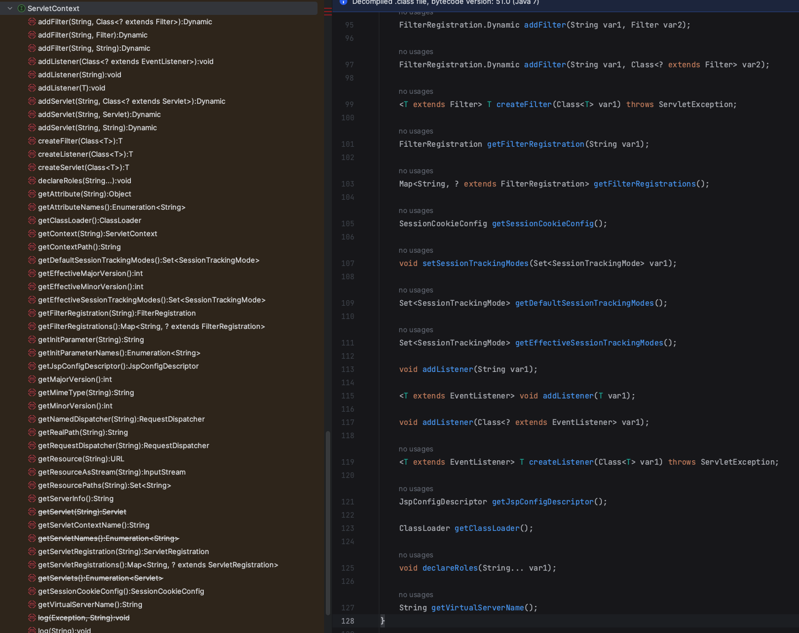
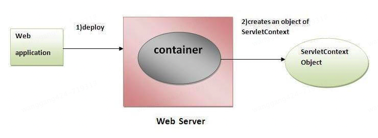

JavaWeb开发基础ServletConfig与ServletContext¶

ServletConfig¶
package javax.servlet;
import java.util.Enumeration;
public interface ServletConfig {
String getServletName();
ServletContext getServletContext();
String getInitParameter(String var1);
Enumeration<String> getInitParameterNames();
}
ServletConfig用于Servlet初始化时从web.xml获取配置信息。主要有以下方法：
public String getInitParameter(String name): Returns the parameter value for the specified parameter name.
public Enumeration getInitParameterNames(): Returns an enumeration of all the initialization parameter names.
public String getServletName(): Returns the name of the servlet.
public ServletContext getServletContext(): Returns an object of ServletContext.
示例，web.xml
<servlet>
<servlet-name>ExampleServlet</servlet-name>
<servlet-class>com.example.ExampleServlet</servlet-class>
<init-param>
<param-name>param1</param-name>
<param-value>value1</param-value>
</init-param>
<init-param>
<param-name>param2</param-name>
<param-value>value2</param-value>
</init-param>
</servlet>
<servlet-mapping>
<servlet-name>ExampleServlet</servlet-name>
<url-pattern>/example</url-pattern>
</servlet-mapping>
ExampleServlet.java
package com.example;
import java.io.IOException;
import java.io.PrintWriter;
import java.util.Enumeration;
import javax.servlet.ServletConfig;
import javax.servlet.ServletException;
import javax.servlet.http.HttpServlet;
import javax.servlet.http.HttpServletRequest;
import javax.servlet.http.HttpServletResponse;
public class ExampleServlet extends HttpServlet {
private ServletConfig config;
@Override
public void init(ServletConfig config) throws ServletException {
this.config = config;
super.init(config);
}
@Override
protected void doGet(HttpServletRequest request, HttpServletResponse response)
throws ServletException, IOException {
response.setContentType("text/html");
PrintWriter out = response.getWriter();
// 获取初始化参数
String param1 = config.getInitParameter("param1");
String param2 = config.getInitParameter("param2");
// 获取所有初始化参数
Enumeration<String> paramNames = config.getInitParameterNames();
while (paramNames.hasMoreElements()) {
String paramName = paramNames.nextElement();
String paramValue = config.getInitParameter(paramName);
out.println("<p>" + paramName + ": " + paramValue + "</p>");
}
// 获取 ServletContext
ServletContext context = config.getServletContext();
out.println("<p>ServletContext: " + context.getContextPath() + "</p>");
// 获取 Servlet 名称
String servletName = config.getServletName();
out.println("<p>Servlet Name: " + servletName + "</p>");
}
}
ServletContext¶

ServletContext用于在整个Web应用程序范围内共享信息和资源。每个Web应用程序都有一个唯一的ServletContext对象，该对象在应用程序启动时创建，并在应用程序关闭时销毁。

通过ServletContext，Servlet可以获取上下文初始化参数、访问资源、记录日志、共享数据等。主要有以下方法：
public String getInitParameter(String name): Returns the parameter value for the specified parameter name.
public Enumeration getInitParameterNames(): Returns the names of the context’s initialization parameters.
public void setAttribute(String name,Object object): sets the given object in the application scope.
public Object getAttribute(String name): Returns the attribute for the specified name.
public Enumeration getInitParameterNames(): Returns the names of the context’s initialization parameters as an Enumeration of String objects.
public void removeAttribute(String name): Removes the attribute with the given name from the servlet context.
ServletContext不但能从web.xml文件get属性，还能set和remove属性。
示例，web.xml
<context-param>
<param-name>contextParam1</param-name>
<param-value>value1</param-value>
</context-param>
<context-param>
<param-name>contextParam2</param-name>
<param-value>value2</param-value>
</context-param>
ExampleServlet.java
package com.example;
import java.io.IOException;
import java.io.InputStream;
import java.util.Enumeration;
import javax.servlet.ServletContext;
import javax.servlet.ServletException;
import javax.servlet.http.HttpServlet;
import javax.servlet.http.HttpServletRequest;
import javax.servlet.http.HttpServletResponse;
public class ExampleServlet extends HttpServlet {
@Override
protected void doGet(HttpServletRequest request, HttpServletResponse response)
throws ServletException, IOException {
response.setContentType("text/html");
PrintWriter out = response.getWriter();
// 获取 ServletContext
ServletContext context = getServletContext();
// 获取上下文初始化参数
String contextParam1 = context.getInitParameter("contextParam1");
String contextParam2 = context.getInitParameter("contextParam2");
// 获取所有上下文初始化参数
Enumeration<String> paramNames = context.getInitParameterNames();
while (paramNames.hasMoreElements()) {
String paramName = paramNames.nextElement();
String paramValue = context.getInitParameter(paramName);
out.println("<p>" + paramName + ": " + paramValue + "</p>");
}
// 设置和获取上下文属性
context.setAttribute("attributeName", "attributeValue");
String attributeValue = (String) context.getAttribute("attributeName");
out.println("<p>Attribute: " + attributeValue + "</p>");
// 获取资源
InputStream is = context.getResourceAsStream("/WEB-INF/config.properties");
if (is != null) {
out.println("<p>Resource found</p>");
} else {
out.println("<p>Resource not found</p>");
}
// 获取实际路径
String realPath = context.getRealPath("/index.html");
out.println("<p>Real Path: " + realPath + "</p>");
// 记录日志
context.log("This is a log message.");
// 获取上下文路径
String contextPath = context.getContextPath();
out.println("<p>Context Path: " + contextPath + "</p>");
}
}
ExampleServlet继承HttpServlet，getServletContext方法来自HttpServlet，HttpServlet继承GenericServlet，GenericServlet提供了getServletContext方法，内部调用的是ServletConfig的getServletContext方法：
public ServletContext getServletContext() {
ServletConfig sc = this.getServletConfig();
if (sc == null) {
throw new IllegalStateException(lStrings.getString("err.servlet_config_not_initialized"));
} else {
return sc.getServletContext();
}
}
总结，ServletConfig每个Servlet都有，ServletContext整个web容器只有一个。ServletConfig用于在Servlet初始化时传递配置信息，包含初始化参数和ServletContext的引用，主要用于获取初始化参数和共享上下文。ServletContext表示整个Web应用程序的上下文，提供在不同Servlet之间共享数据和资源的机制，主要用于共享数据、访问资源、记录日志和获取应用程序信息。